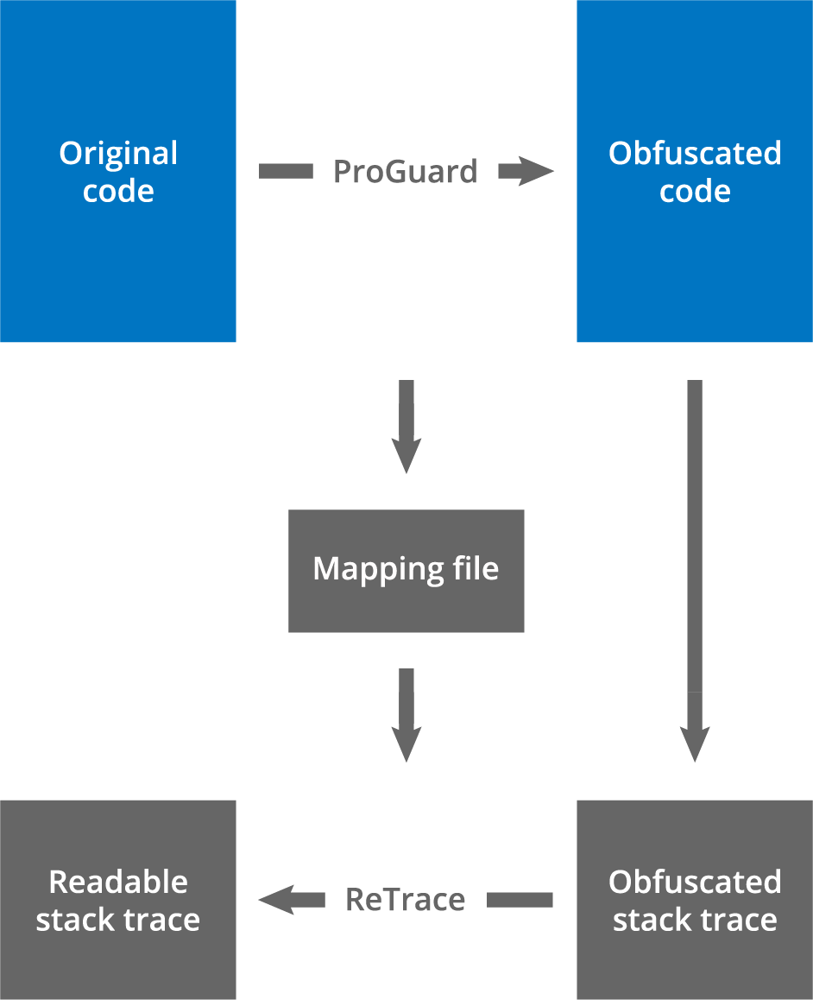

如何通过 Mapping 文件反混淆
写在前边
做过 Android 开发的应该或多或少都知道“混淆”这个技术点，它不仅可以帮助我们增加三方逆向的难度，还可以有效减少包体积，瘦身 APK
其实这些能力都来自于 Proguard 这个程序，Proguard 能利用字典文件，在编译时将我们的类名，方法名，字段名都替换掉，最后生成一份非常反人类的编译产物。Proguard 在每次运行时都会创建一个 mapping.txt 文件，其中列出了经过混淆处理的类、方法和字段名称与原始名称的映射关系。此映射文件还包含用于将行号映射回原始源文件行号的信息
这篇文章的目的就是要解析生成的 Mapping 文件
正文
Mapping 文件的来源与用途
以下就是 Mapping 文件的生成过程
这个 Mapping 文件是由 Proguard 程序自动生成的，会存放在 output 目录下，与 release 包放在一起。需要谨记的是，Mapping 文件可能在每次 Proguard 运行后都会不同，所以发布给用户的包一定要留存好 Mapping 文件，方便后续跟踪解决问题
了解 Mapping 文件的好处
了解 Mapping 文件最直观的好处在于我们跟踪线上的经过混淆之后的 Crash 信息时，可以从 Mapping 文件逆向推出原始的堆栈信息，更快更方便的定位问题，但不只这些，我们还可以通过 Mapping 文件处理内存快照文件 Hprof 的反混淆，处理 Systrace 的文件的反混淆，还有 Nanoscope 文件的反混淆等
如何解析 Mapping 文件
注意：Android 在新版中启用了 R8 编译器，没有使用 Proguard 工具，虽然兼容 Proguard 的配置和字典等，但是编译出来的 Mapping 文件格式还是有一点不同。我们会在最后一个小节讲一下其中的不同
下面我们详细来看 Mapping 文件的格式
1 | classline |
Mapping 文件的正式部分由多个 Class 块组成，每个 Class 块中包含混淆前后的类信息，字段信息，方法信息。每个 Class 块由顶格的类信息开头，后边跟着开头带有4个空格的字段信息与方法信息
每个 Class 块中详细格式如下：
类信息：
1 | originalclassname -> obfuscatedclassname: |
混淆之前的全限定类名与混淆后的全限定类名通过 -> 分隔符分割，以 : 标识当前类信息的结束，标识类内字段，方法信息的开始
备注：全限定类名，是指带有包名限定的类名，可以完全定位一个类
字段信息：
1 | originalfieldtype originalfieldname -> obfuscatedfieldname |
混淆之前的字段信息与混淆之后的字段信息同样通过 -> 分隔符分割，值得注意的是，混淆前的字段包含了字段类型和字段名称，而混淆之后只有字段名称
方法信息：
1 | [startline:endline:]originalreturntype [originalclassname.]originalmethodname(originalargumenttype,...)[:originalstartline[:originalendline]] -> obfuscatedmethodname |
备注：标识着
*的行，意味着可能出现任意多次;[]表示内容是可选的;…表示可能会出现任意多个前边指定的item;:与，与->都是分隔符
方法信息同样通过 -> 分隔符分割，但是方法信息比类信息和字段信息更复杂一点，因为方法还额外包含了行号表，参数，返回类型等信息
- originalreturntype：原始返回类型，全限定类名，或者基本类型，或者无类型 void
- originalmethodname：原始方法名称
- originalclassname：可选，当方法不属于所在的类块时，需要特别通过全限定类名引用
- originalargumenttype：原始参数类型，全限定类名或者基本类型，多个参数按顺序通过
,分割 - obfuscatedmethodname：混淆后的名称
剩下的行号信息，稍微复杂一点要根据方法有没有做内联优化分成两种情况：
无内联优化：
- [startline:endline:]：和 Jvm 字节码中的 LineNumberTable 对应，表示原始代码的行号范围
- [:originalstartline[:originalendline]]：无内联优化，这个字段不存在
有内联优化
- [startline:endline:]：是一个编译器给出的一个类似于源码中的行号，为什么说类似于源码行号，我们后边通过示例来说明
- [:originalstartline[:originalendline]]：这个字段中 originalendline 又是可选的，所以也分两种情况
- [:originalstartline]：只有起始行号，表示这是异常的某个中间调用（？？？大问号？后边通过示例来说明吧，这里不好理解)
- [:originalstartline:originalendline]：有行号范围，表示在源码中的真实行号范围，对应源码的方法范围
有一些要注意的点：
- 方法的行号唯一标识了这个方法，这个在我们从堆栈中反推原始信息时特别有用
- 如果方法的行号没有存在，那么我们只能通过方法的签名（或者描述符）来反混淆代码，但是这种匹配不是绝对准确的，可能会出现匹配到多个相同的方法或字段
Mapping 示例分析
简单示例
1 | com example.application.ArgumentWordReader -> com.example.a.a: |
com example.application.ArgumentWordReader 被混淆为 com.example.a.a ，其中字符 a 来源于混淆文件中所配置的字典文件
字段 arguments 和 index 会在混淆中丢掉类型信息，同时转换为混淆字符 a
如果多个方法或者字段的签名（或者说描述符）不同，那么混淆之后的名称可能是相同的
方法的实例构造函数 <init> 和静态类构造函数 <clinit> ，名称不会被混淆，只会丢弃其参数列表和返回类型
方法 nextLine 和 lineLocationDescription 都有自己的源码行号范围，但是返回类型和参数列表是相同的，如果在混淆的配置文件中配置保留了 LineNumberTable，那么在报错堆栈中就可以看到行号，也就可以通过行号定位到具体的方法，而如果没有在混淆的配置文件中配置保留 LineNumberTable，那么报错堆栈中也就不会打印出行号，仅仅通过返回类型和参数列表是无法区分二者的，所以这就是为什么这两个方法的混淆之后的名称是不同的
以上的示例比较简单，我们来看一下复杂的示例
复杂示例
1 | com.example.application.Main -> com.example.application.Main: |
com.example.application.Main 类配置了 keep 属性，所以类信息没有被混淆掉，一般我们会把可能需要被反射使用的类保留，防止在 release 包中类名变化导致混淆使用出错
configuration 字段信息同上，混淆后丢弃类型
实例构造函数 <init> 和方法 execute 同上解析方式
剩下的方法都比较奇怪，开头的行号都是特别大的数字，且有几个方法行号是相同的，明显不是正常的行号，
这是因为经过了方法内联处理，在混淆处理的过程中，可能会内联方法到其他方法中，甚至进行递归的内联
方法内联
简单来说，就是将互相调用的多个方法合并为一个方法，这样减少程序方法调用的次数，从而减少程序调用过程中的栈帧的创建销毁等额外的消耗，提升性能
例如
1 | class A: |
做方法内联优化之后：
1 | class A: |
了解了方法内联之后，我们再来看方法内联对混淆的影响，方法内联之后，堆栈中原来 B.b() 方法已经被内联到 A.a() 方法中，混淆之后的方法信息也自然指向了 A.a()，那么堆栈中出现的错误信息也是指向 A.a()，但是我们源码中的调用是来自方法 B.b() 的，所以内联前后的优化信息我们是需要知道的，方便在后续堆栈信息追踪时反推源码信息。
下边我们就看一下具体的解析方法
1 | 2039:2056:void com.example.application.GPL.check():39:56 -> a |
方法最前边的行号范围如果相同，就代表一个内联链中的方法调用链，比如以上两句表示，方法 check 被内联到了 execute 方法中，内联的位置是原 execute 方法的第76行，如果末尾是行号范围，那么对应的就是最终的内联方法体
开头的行号是内联函数调用链最底层的行号范围和编译器给予的一定的偏移量加和的结果，偏移量是
1000的倍数，偏移量的目的是避免与其他的正常的代码范围产生冲突，所以2039：2056是来自 check 方法的源码行号范围 39:56 与 2000 的偏移量相加得出的结果
另外，因为 check 方法因为不属于类 com.example.application.Main，所以使用了类全限定符标识，标明 check 所处的类
1 | 2236:2252:void printConfiguration():236:252 -> a |
以上 Mapping 文件的分析方法和之前的一致，唯一需要说明的是这其中的关联
execute 方法在80行内联了方法 printConfiguration，后者的行号范围是 236:252，其中，printConfiguration 又在 243 行内联了方法 createPrintWriterOut，后者的行号范围是 40:42。
至此，我们分析完了 Mapping 文件的所有情况的格式，最后的两行交由读者自己尝试分析一下。
R8 编译器
当使用 Android Gradle 插件 3.4.0 或更高版本构建项目时，该插件不再使用 ProGuard 来执行编译时代码优化，而是与 R8 编译器协同工作来处理编译时任务，所以可以通过 Gradle 插件版本来查看具体使用了 Proguard 还是 R8 编译器。
R8 编译器一定程度上兼容 Proguard 规则，但是还是略有不同。
详情可以参看官网：https://developer.android.com/studio/build/shrink-code?hl=zh-cn
注释
Mapping 文件以 # 开头的行作为注释，标识 R8 程序的格式，日期等信息，但是在 Proguard 中还未发现这样的规范
例如以下：
1 | # compiler: R8 |
与 Proguard 区别
R8 中的行号的表示方式和 Proguard 还不太一样，以下的解析方式是基于 Proguard 新版的规范和源码相印证的结果，在 R8 的官方文档中，是直接导向 Proguard 官网的，并没有自己的格式的说明（这点在 Hprof 格式也是），所以有谁找到对应的官方文档，可以帮忙附到评论中，感谢。
1 | androidx.appcompat.app.AppCompatActivity -> androidx.appcompat.app.AppCompatActivity: |
这是一个 R8 编译完成的 Mapping 文件示例，因为都使用了 keep 属性，所以没有被混淆之后名称没有被字典中的字符替换掉，但这点对于分析 Mapping 格式没有什么影响。
和 Proguard 规范有所不同的是：
- 许多方法并没有用一个连续的行号范围标识，而是被拆分成了不同的子块，每个子块都有自身对应的行号范围，方法前边的是虚拟行号，对应后边的真实行号范围
例如：
1 | 1:1:void <init>():77:77 -> <init> |
- 各个方法的虚拟行号的范围是有所重叠的，但是所对应的混淆之后的名称是不同的，所以在区分不同方法上来说是没有歧义的
例如：
1 | 1:2:void attachBaseContext(android.content.Context):97:98 -> attachBaseContext |
虚拟行号范围重叠了，但实际的行号范围是不一样的，而且混淆后的名称也是不同的
- R8 编译出的文件中并未找到内联方法相关的编译优化，不确定是没有开对应的优化项还是说根本就没有这项优化，所以不会出现 Proguard 之前的内联相关的调用栈的 Mapping 信息
后记
基于以上的 Mapping 文件的解析规则，我们可以做很多事情，比如反混淆 Trace 文件，反混淆 Nanoscope 文件，反混淆 Hprof 文件等等，我基于这个规则，开发了一个 ReProguard 的程序，可以供大家参考，欢迎交流提意见
项目地址：https://github.com/0xforee/ReProguard
如果后续有时间，我会基于收集的资料写一个 Hprof 文件格式的解析教程，欢迎评论交流。^_^
如何通过 Mapping 文件反混淆
http://www.0xfree.top/2020/06/07/how-to-reproguard-by-mapping/